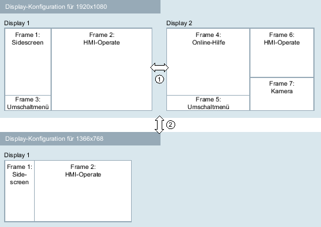

Mithilfe des Display Managers und Display-Konfigurationen ist es möglich, den SINUMERIK Operate verkleinert, d. h. nicht mehr im Vollbildmodus, auszuführen und den frei werdenden Platz mit anderen Applikationen zu belegen. Bei diesen Applikationen handelt es sich entweder um Standard-Windows-Applikationen (.EXE) oder um Applikationen, die zum Display Manager gehören. Beide Typen von Applikationen können auch von Dritten mithilfe des OA-Toolkits von SINUMERIK Operate entwickelt und in eine Display-Konfiguration integriert werden. Für die Anzeige der Applikationen wird das Display in so genannte Frames unterteilt. Jeder Frame kann eine Applikation oder ein Menü zur Steuerung einer in einem anderen Frame angezeigten Applikation enthalten. Es sind mehrere Display-Aufteilungen, sog. Displays möglich, zwischen denen zur Programmlaufzeit umgeschaltet werden kann. Diese Displays werden zu einer Display-Konfiguration zusammengefasst. Es kann mehrere Display-Konfigurationen geben, z. B. für verschiedene Bildschirmauflösungen.
Eine Display-Konfiguration wird entweder für eine bestimmte Bildschirmauflösung oder für eine bestimmte Bedieneinheit definiert. Die verfügbaren Display-Konfigurationen müssen in der Datei systemconfguration.ini in der Sektion [displayConfigurations] dem System bekanntgemacht werden. Die Beschreibung der Display-Konfiguration selbst findet in einer separaten Konfigurationsdatei statt.
Systemvoraussetzung
Der Display Manager wird von folgenden Systemen unterstützt:
-
PC/IPC
-
NCU 1750/1760 und PPU 1740
Weitere Informationen
Weitere Informationen und Beispiele zum Display Manager finden Sie im
Programmierhandbuch Run MyScreens.
| | Weitere Informationen zur Bedienung vom Display Manager finden Sie in der Online-Hilfe |
Display-Konfigurationen (Beispiele)
① | Wechsel mit Hilfe des Umschaltmenüs |
② | Wechsel mit Hilfe TCU- bzw. Auflösungsumschaltung |
Beispiel der Datei "systemconfiguration.ini"
[displayConfigurations] DC001 = res:=1366x768, file:=sldm_1366x768 DC002 = res:=1920x1080, file:=sldm_1920x1080 DC003 = tcu:=TCU1, file:=tcu1_layoutDas Beispiel enthält drei Display-Konfigurationen. Die Namen der Einträge beginnen immer mit der Zeichenfolge "DC" gefolgt von einer laufenden Nummer. Jeder Eintrag hat ein "file"-Property, das auf die Datei mit der Display-Konfiguration verweist. Der Name der Datei ist beliebig. Sie wird wie andere Konfigurationsdateien auch in den cfg-Verzeichnissen unter siemens, addon, oem und user gesucht. Die Dateierweiterung ".ini" muss nicht angegeben werden. Das Property "res" bezeichnet die Auflösung, für die die jeweilige Display-Konfiguration gilt. Mit dem Property "tcu" können auf verschiedenen Panels unterschiedliche Display Manager Konfigurationen angezeigt werden.
| Hinweis |
Besonderheiten
|
Aktivierung
 | Warnung |
Unerwartete Maschinenbewegung durch FehlbedienungDie Fehlbedienung von Geräten mit Touchscreen kann zu einer unerwarteten Maschinenbewegung führen. Personen- oder Sachschäden können die Folge sein.
|
| Achtung |
Möglicher Applikations- und DatenmissbrauchSidescreen und Display Manager beinhaltet keine eigene Rechteverwaltung für Applikationen. Organisieren Sie die Rechteverwaltung, wenn sie Applikationen für den Sidescreen oder Display Manager programmieren. Aktivieren Sie z. B. Lese- und Schreibrechte von Applikationen nur für zuständige Anwender. |
Für die Aktivierung des SINUMERIK Operate Display Managers muss folgendes Anzeige-Maschinendatum gesetzt werden.
MD9114 $MM_SIDESCREEN | SINUMERIK Operate Sidescreen | |
= 2 | Gibt die Sidescreen-Anzeigefläche in HD-Ready frei. Gibt den Display-Manager in Full-HD frei. | |
Die vom Display Manager für die beiden Bildschirmauflösungen 1920x1080 und 1366x768 verwendeten Standard-Konfigurationen befinden sich in den beiden Dateien:
sldm_1920x1080.ini
sldm_1366x768.ini
Diese Dateien können als Vorlage für kundenspezifische Display-Konfigurationen verwendet werden. Im vorliegenden Kapitel wird die Erstellung kundenspezifischer Display-Konfigurationen beschrieben.
| Hinweis |
Automatisches Ausblenden der Windows-TaskleisteSINUMERIK Operate wird auf PC/IPC in manchen Situationen von der Windows-Taskleiste überdeckt. Damit die Oberflächenbedienbarkeit nicht beeinträchtigt wird, können Sie die Taskleiste automatisch ausblenden lassen: Klicken Sie mit der rechten Maustaste auf die Taskleiste und öffnen Sie im Menü die Auswahl "Eigenschaften" (Windows 7) oder "Taskleisteneinstellungen" (Windows 10). Aktivieren Sie dann unter dem Register "Taskleiste" die Option "Taskleiste automatisch ausblenden" (Windows 7) oder "Taskleiste im Desktopmodus automatisch ausblenden" (Windows 10). |